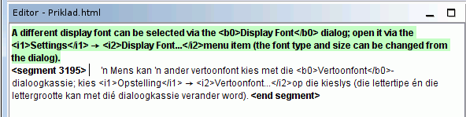

Tento úvodní průvodce obsahuje jen úplné základy pro orientaci v programu. Ideální by bylo, kdyby si všichni uživatelé přečetli Uživatelskou příručku OmegaT, aby se seznámili se vším, co OmegaT nabízí. Zde popsané klávesové zkratky používají konvence „ctrl+klávesa“, zatímco pro uživatele Mac-ů platí „cmd+klávesa“. Klávesa „cmd“ má na klávesnicích Apple buď označení „command“, nebo obrázek jablka.
Okno aplikace OmegaT se skládá z jednoho celkového prostoru se třemi různými okny Velikost každého z těchto oken může být změněná za použití myši. Vlevo je Editor, sem vpisujete svůj překlad. Napravo nahoře je okno Přibližných překladů, kde se zobrazují nalezené položky z překladové paměti. Pod ním je okno Slovníku, zde se zobrazují shodné položky slovníku.
V okně Editoru zobrazuje OmegaT zdrojový text 'segmentovaný' do vět (nebo odstavců). Tyto segmenty překládáte jednotlivě jeden za druhým. Když přecházíte od segmentu k segmentu, vaše překlady se zaznamenávají v překladové paměti. Jakmile jsou všechny segmenty přeloženy (nebo i dříve) OmegaT použije překladovou paměť pro vygenerování přeloženého dokumentu (přeložených dokumentů) do složky „Target“, tj. do cílové složky.
OmegaT organizuje vaši překladatelskou práci v tzv. překladových projektech. Pro každý projekt vytvoří OmegaT sadu adresářů. Ty se používají pro uložení zdrojových dokumentů určených na překlad, slovníků, které můžete chtít použít, a jakýchkoliv překladových pamětí, které byste chtěli použít. OmegaT také vytvoří složku „Target“ (Cíl), která obsahuje výsledné přeložené dokumenty.
V menu vyberte Projekt → Nový...
Přejděte do adresáře, kam chcete uložit soubory projektu a napište název pro překladový projekt. Tento název bude použit pro hlavní adresář projektu; všechny soubory projektu budou uloženy v tomto adresáři, nebo v jeho podadresářích.
OmegaT vás požádá o potvrzení nebo změnu vytvářených adresářů projektu, pomocí dialogového okna zobrazeného níže:
Můžete jednoduše ponechat umístění podadresářů, ale ujistěte se, že kódy zdrojového a cílového jazyka jsou správné. Vyberte kódy jazyka (2 písmena) nebo jazyka-a-oblasti (2 + 2 písmena) z rozbalovacího seznamu, nebo je napište ručně (dodržujte vzor o dvou písmenech). Zapamatujete si umístění cílového podadresáře (pro vaše přeložené cílové dokumenty). Pokud chcete, aby program OmegaT segmentoval podle vět místo podle „odstavců“, je dobré překontrolovat Pravidla segmentace.
Když kliknete na OK pro přijetí nastavení projektu, OmegaT vás požádá o vybrání zdrojových dokumentů pro import. Můžete importovat jednotlivé soubory, ale můžete také importovat celé adresářové stromy (se všemi soubory ve všech podadresářích). Pokud jste náhodou importovali nesprávné dokumenty, nebo příliš mnoho dokumentů, můžete je jednoduše odstranit ze zdrojového adresáře (tj. Source) vašeho OmegaT projektu (například za pomoci správce souborů vašeho systému).
Pro kontrolu vašeho seznamu souborů určených k překladu, můžete použít okno Soubory projektu (Menu: Projekt → Soubory projektu ..., pokud se neotevře automaticky). Pokud jste museli změnit obsah zdrojového adresáře, nezapomeňte nejdříve znovu načíst projekt (Menu: Projekt → Znovu načíst). Podle výchozího nastavení programu OmegaT bude otevřen první soubor v seznamu projektu. Mějte na paměti, že OmegaT může překládat pouze soubory v níže uvedených formátech pokud odpovídají vzorům definovaným ve filtrech souborů. Jakékoliv jiné soubory budou ignorovány.
- soubory OpenDocument/OpenOffice.org
prostý text
jednojazyčné .po
Bundle.properties Java
XHTML, HTML
soubory HTML Help Compiler
INI (formát 'klíč=hodnota')
DocBook
Microsoft Open XML
jednojazyčné soubory Okapi XLIFF
Když jste již jednou definovali projekt a soubory určené na překlad, OmegaT otevře v Editoru první zdrojový soubor.
Aktivovaný segment je zvýrazněn zeleně; kopie zdrojového textu je zobrazena pod ním, v „cílovém poli“. (V tomto bodě, veškerý text mimo cílového pole je chráněn proti zápisu a nemůže být změněn.) Svůj překlad napište mezi tagy <segment 0001> a <konec segmentu> tak, že přepíšete zdrojový text. Stiskněte „ENTER“ pro přechod na následující segment. Poznámka:
Pro přechod na jakoukoliv jinou část textu, ať už výše nebo níže, použijte dvojklik na větu nebo odstavec, který chcete otevřít.
Pokud chcete raději překládat do prázdného cílového pole, nastavte tuto volbu Možnosti → Nastavení editace ....
Můžete změnit nastavení okna Editoru (například aby zobrazoval či skryl zdrojový text, zvýraznit přeložený text atd.) v položce Zobrazit v nabídce Hlavního okna.
Když stisknete „ENTER“ tak se děje hned několik věcí doslova neviditelně: OmegaT přidá přeložený pár segmentů (zdrojový segment a jeho překlad) do překladové paměti a také automaticky překládá jakékoliv identické segmenty, které nalezne v jiných souborech projektu. Také hledá v překladové paměti a ve slovníku shodu s následujícím nepřeloženým segmentem.
Když OmegaT najde v překladové paměti nějaké přibližné překlady (30% nebo výše) pro následující segment, zobrazí je v okně Přibližné překlady. Podle výchozího nastavení je v okně Přibližné překlady vybraná první shoda.
Pro vložení shodné položky překladové paměti z okna Přibližných překladů do vašeho cílového pole, můžete použít klávesové zkratky:
Stiskněte Ctrl+I pro vložení vybrané shodné položky na aktuální pozici kurzoru, nebo ...
Stiskněte Ctrl+R pro přepsání celého segmentu vybranou položkou.
Pokud bylo nalezeno několik shodných položek a nechcete použít tu vybranou:
Vyberte v okně Přibližných překladů shodnou položku, kterou chcete: Ctrl+2 pro druhou zobrazenou shodnou položku, Ctrl+3 pro třetí shodnou položku, atd.
Pak stiskněte zkratky Ctrl+I nebo Ctrl+R ve funkci, jak již bylo popsáno výše.
(Můžete programu OmegaT zadat, aby automaticky vložil jakoukoliv první shodnou položku nad zadané procento shody do cílového pole hned při otevření segmentu. Nastavte tuto volbu pomocí Možnosti → Nastavení editace ...)
100% shodné pojmy ve slovníku se zobrazí jako reference v okně Slovníku. Tyto pojmy ale nemohou být přenesené do textu překladu pomocí klávesových zkratek.
OmegaT poskytuje množství výkonných vyhledávacích funkcí. Okno Hledat otevřete pomocí zkratky Ctrl+F, pak zadejte slovo nebo frázi, kterou chcete vyhledat do pole „Hledat“. Nebo vyberte slovo nebo frázi v editačním poli (cílový text aktivního segmentu) a stiskněte Ctrl+F. Slovo nebo fráze je v tomto případě zadané do pole „Hledat“ automaticky.
Když jste již přeložili všechny segmenty (nebo i dříve, pokud chcete) OmegaT aktualizuje cílové dokumenty pomocí překladů uložených v překladové paměti. Aby se tak stalo, vyberte z menu Projekt → Vytvořit přeložené dokumenty. OmegaT vytvoří přeložené verze všech přeložitelných dokumentů ve zdrojovém adresáři projektu („Source“), bez ohledu na to, zda byly úplně přeložené. Úplně nebo částečně přeložené soubory budou uloženy v cílovém projektovém adresáři. Pro konečnou úpravu vašeho překladu otevřete cílové soubory v příslušných aplikacích (prohlížeč, textový procesor, ...), abyste mohli provést kontrolu obsahu a formátování vašeho překladu. Potom se můžete vrátit k OmegaT pro provedení potřebných úprav; nezapomeňte znovu vytvořit přeložené dokumenty.
OmegaT zajistí, že formátovaní zdrojových dokumentů (tučné, kurzíva atd.) se neztratí, a to tím způsobem, že ho označí speciálními tagy. Tagy aplikace OmegaT jsou vytvořené z jednoho nebo více písmen následovaných jednou nebo více číslicemi a u ukončujícího tagu používají znak „/“ (např.: <f0>, </f0> <br>, </s2> atd.). S těmito značkami musíte zacházet opatrně a ujistěte se, že jsou v cílových segmentech umístěny správně (vizte Operace s tagy).
V těchto krocích jsme zvýraznili tagy tak, aby byli viditelnější, ale v OmegaT zvýrazněné nebudou. Tagy HTML, zvýrazněny modře, OmegaT ignoruje, protože kompletně obemykají segment. Tagy, níže zvýrazněné zeleně musí OmegaT zpracovávat, protože tyto se nacházejí uvnitř segmentu. Zde je příklad segmentu v HTML:
<p>Jiné písmo pro zobrazení textu může být vybrané přes dialogové okno <b>Písmo</b>. Otevřete jej přes <i>Možnosti</i> → <i>Písmo...</i>. Font a velikost písma mohou být změněny z dialogového okna.</p>
Takto to zobrazí OmegaT, v příkladě překlad afrikánštiny:

Když OmegaT vytvoří přeložený dokument, HTML bude vypadat takto:

OmegaT nedetekuje automaticky chybné značkování/tagování v přeloženém dokumentu. Proto před tím, než dodáte cílový dokument vašemu klientovi, měli byste zkontrolovat, zda vaše tagy neobsahují chyby. Vyberte z menu Nástroje → Ověření tagů. Zobrazí se tabulka znázorňující, kde se zdrojové a cílové tagy neshodují. Klikněte na číslo segmentu. V Editoru budete automaticky přemístěni na sporný segment, kde můžete tagování opravit.
V některých případech mohou chyby tagů způsobit dokonce to, že dokument nebude možno otevřít. Proto byste se měli ujistit, že jste opravili všechny chyby tagů před tím, než vytvoříte přeložené soubory. A závěrem, vždy byste měli překontrolovat konečné formátování otevřením přeloženého dokumentu v příslušné aplikaci nebo editoru.
| Právní poznámky | Obsah | Tématický rejstřík |